разрез
Точечные крепежи
Минимум металла
Стекло держится на точечных крепежах по торцу. Самый «невидимый» вариант: в кадре остаётся только стекло и поручень.
Крепёж в тело марша или в косоур. Требует прочного основания.
Ростов-на-Дону · более 10 лет · 5 000+ м.п.
Безрамные системы на закалённом триплексе 6+6 мм. Приедем с образцами стекла, покажем визуализацию вашей лестницы и назовём точную цену — до того, как вы заплатите.
Как мы работаем
На рынке замер и визуализацию обычно продают отдельно — от полутора до пяти тысяч рублей. У нас это часть работы, и она ни к чему вас не обязывает.
Инженер привозит образцы: прозрачное, тонированное и просветлённое. Разницу между ними по фотографии не видно — только вживую, при вашем свете.
Показываем, как ограждение будет выглядеть именно в вашем доме, до заказа. Вы соглашаетесь на картинку, а не на описание словами.
Готовое стекло ждёт на складе столько, сколько нужно: доделать отделку, занести на этаж крупную мебель. Монтаж — когда вы будете готовы.
Знаковый объект
Центр Ростова-на-Дону, Каяни 20Б — целый квартал в границах улиц Каяни, Налбандяна, Ченцова и 2-й линии
Наша работа: остекление балконов и террас первой и второй очереди.
«Все балконы и террасы — со стеклянными ограждениями»
с сайта застройщика
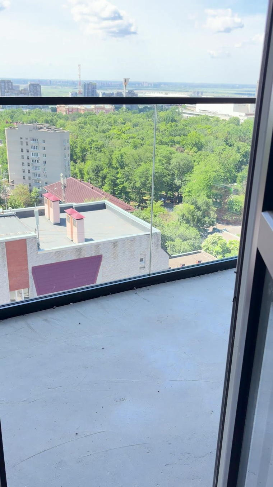
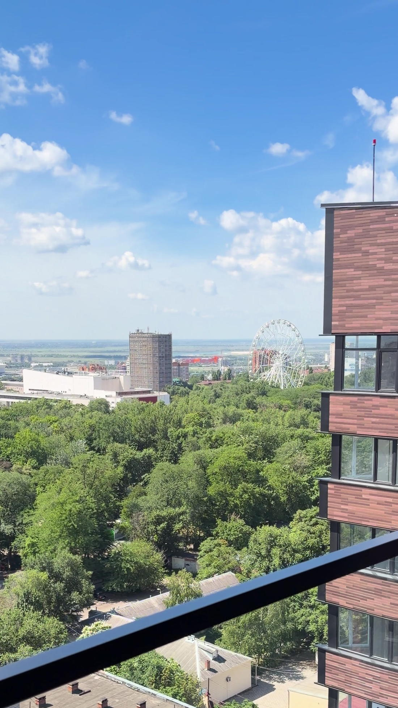
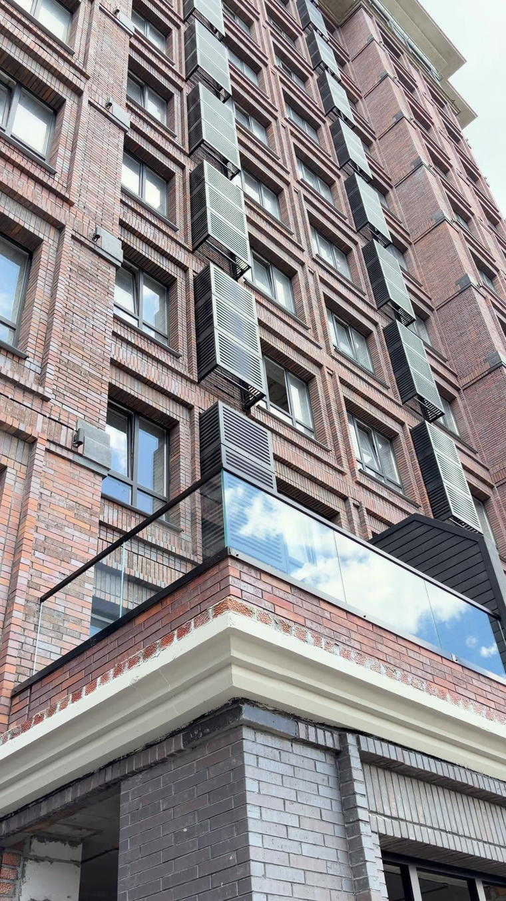
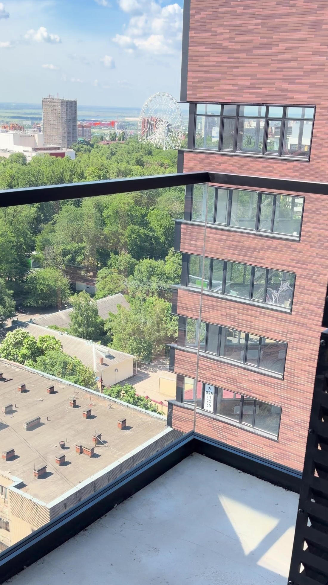
Объекты
Съёмка на объектах, без обработки и стоковых картинок. Стекло почти не видно на фотографии — поэтому часть работ показана короткими видео.
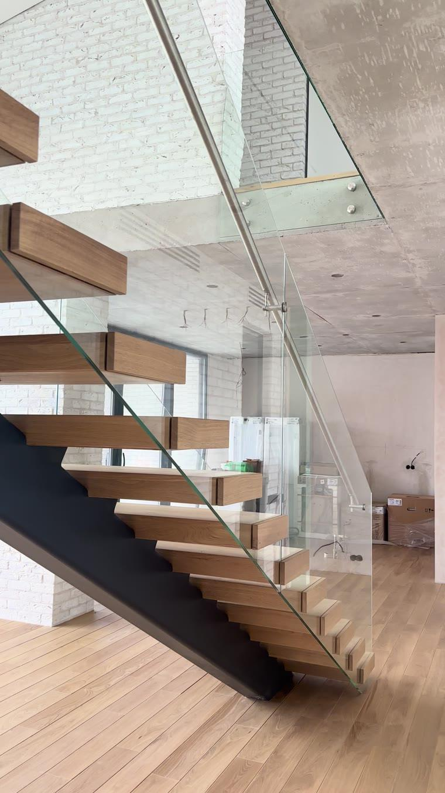
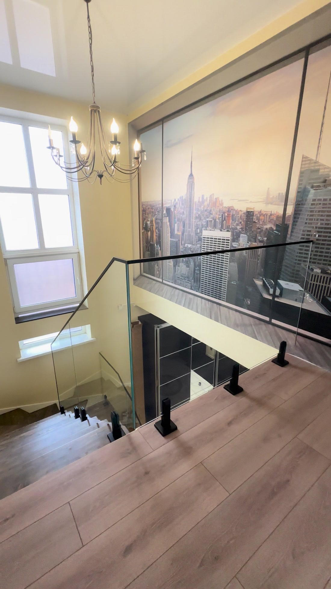
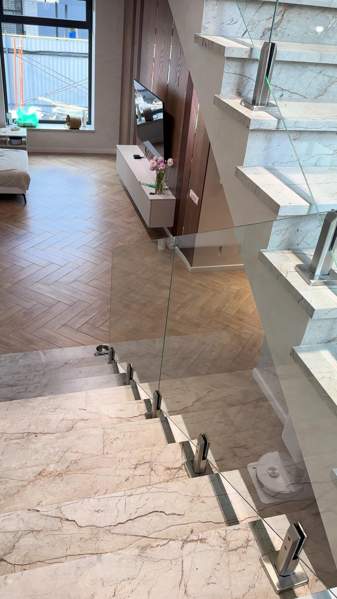
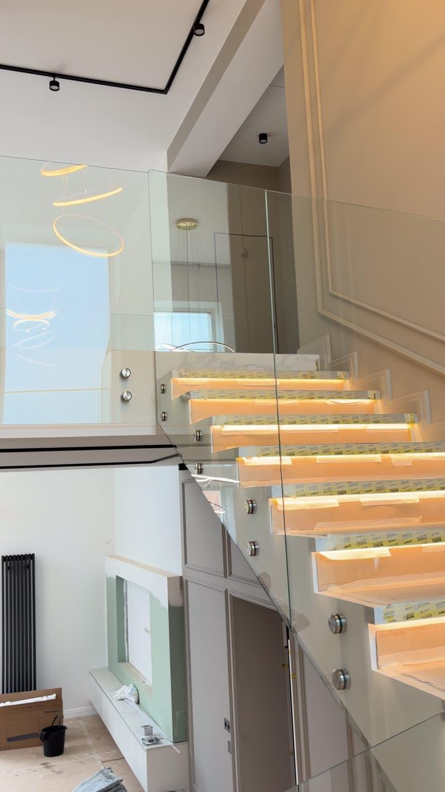
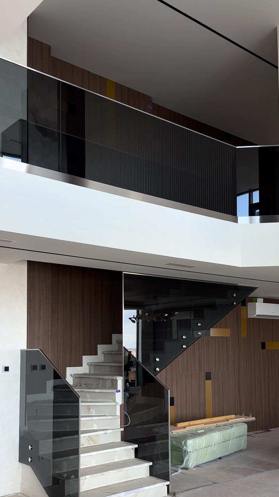
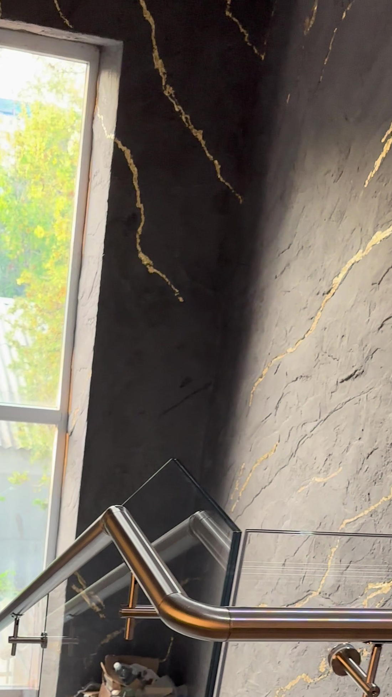
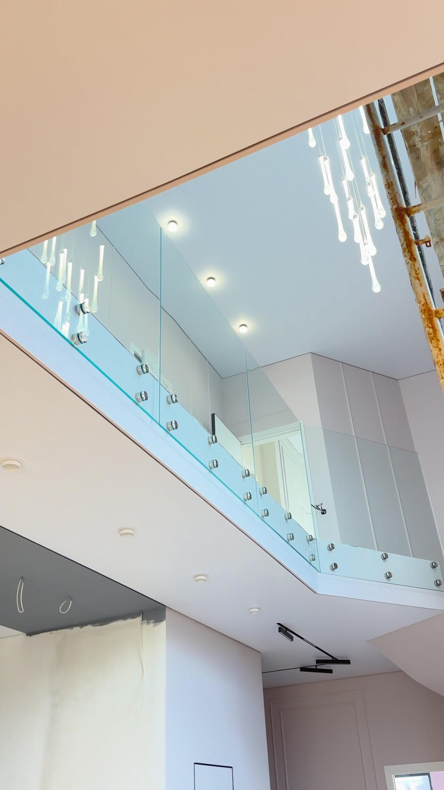
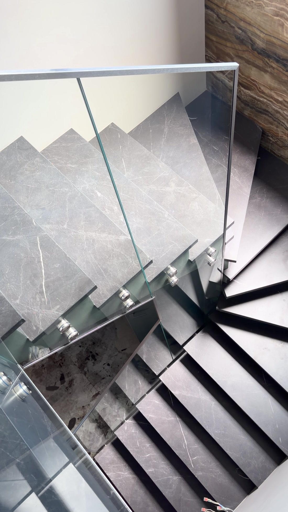
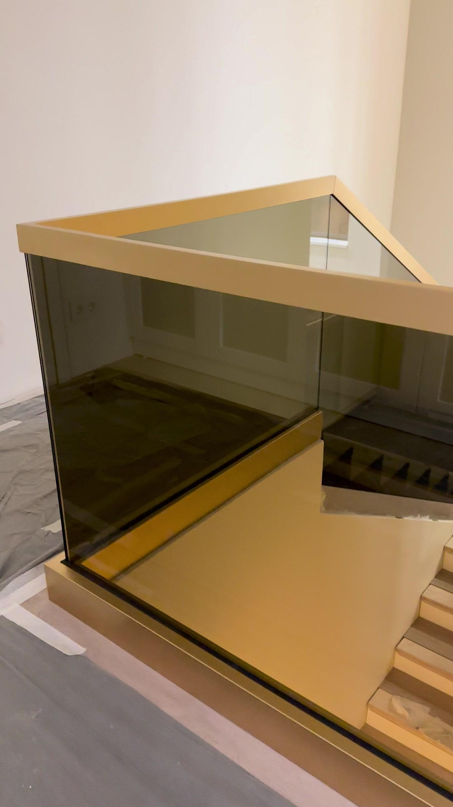
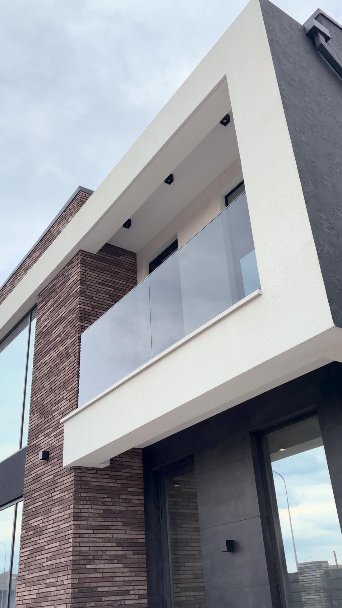
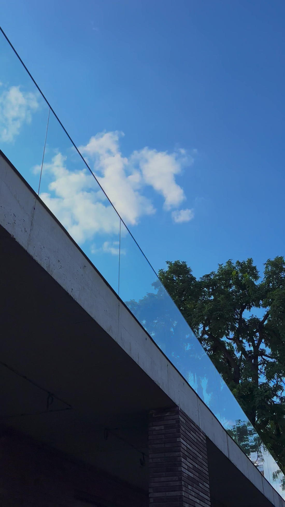
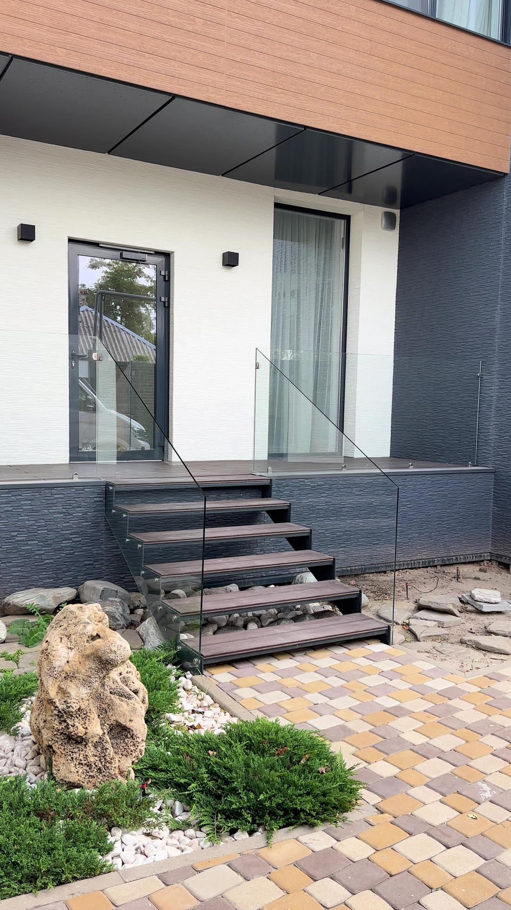
Метраж, тип крепления и сроки по каждому объекту добавим, когда заказчик передаст описания.
Расчёт стоимости
Выберите объект, размер и материалы — схема перерисуется, а цена появится, когда заполнены все параметры. Это прайс, а не «ориентировочно»: окончательная смета подтверждается на замере.
Выберите параметры — и увидите точную цену
Осталось отметить
В цену входит замер, чертежи, изготовление, доставка, подъём на этаж, монтаж, расходные материалы и уборка. Отдельно — только демонтаж и вывоз старых перил.
Отправить расчёт в WhatsAppили позвонить: +7 967 300-80-40Системы крепления
Выбор зависит от конструкции марша и от того, сколько металла вы готовы видеть в кадре. На стоимость тип крепления не влияет — цена одна.
Минимум металла
Стекло держится на точечных крепежах по торцу. Самый «невидимый» вариант: в кадре остаётся только стекло и поручень.
Крепёж в тело марша или в косоур. Требует прочного основания.
Универсальное решение
Стойки ставятся по верху марша, стекло заходит между ними. Работает там, где торец нагружать нельзя.
Подходит для деревянных и комбинированных лестниц.
Чистая линия
Алюминиевый профиль по основанию принимает всю нагрузку. Стекло выходит из пола одной плоскостью без видимого крепежа.
Закалённый крепёж и химический анкер. Максимальная жёсткость.
Почему дороже
Большинство ограждений в объявлениях «от 7 500 ₽» — это одно закалённое стекло. Мы работаем только с триплексом 6+6. Нажмите на любую панель и посмотрите, что произойдёт при ударе.
Полотно рассыпается на мелкую крошку и полностью уходит вниз. Проём остаётся открытым.
Плёнка удерживает оба стекла. Полотно трескается, но остаётся на месте — проём закрыт.
Первые годы бетон «играет»: конструкции незначительно смещаются. Одинарное закалённое стекло на это реагирует и может разрушиться. Триплекс такие подвижки переносит.
Полотно надевается на крепёж в доме, где уже лежат плитка и паркет. Если закалённое стекло разрушится при установке, осколки уйдут вниз и повредят отделку. Переделку мы сделаем за свой счёт, но вы потеряете два-четыре месяца в почти готовом доме.
Бывает и так, что перекалённое стекло разрушается само, без удара. За последние пять-шесть лет мы столкнулись с этим дважды — и именно поэтому не рискуем отделкой в вашем доме.
«Триплекс — это склеенные между собой два закалённых стекла, что даёт гарантию, что стекло при случайном разбитии не осыпется вниз при монтаже и эксплуатации»
Сергей Красюков, основатель
Процесс
Срок указывается в договоре — это обязательство, а не ориентир.
Звонок, WhatsApp или расчёт на сайте. Уточняем объект и удобное время.
Инженер приезжает с образцами стекла, снимает размеры, показывает варианты креплений на месте.
Вы видите, как ограждение будет выглядеть в вашем доме, и получаете точную стоимость.
Срок сдачи фиксируется в договоре. Предоплата 75% закрывает замер, чертежи, материал, расходники и доставку на адрес.
Изготовление стекла по вашим размерам, доставка, подъём на этаж, монтаж и уборка после работы.
Принимаете работу — и только после этого платите оставшиеся 25%.
Гарантия и документы
Гарантия распространяется на конструкцию и монтаж. Исключение — механические повреждения: направленный удар по торцу стекла или повреждение при ремонте.
Больше ничего «сверху» не появится — состав работ закрыт договором.
Границы работы
Проще сказать сразу, чем выяснять на замере. От части заказов мы отказываемся осознанно — и ниже объясняем почему.
Вопросы и ответы
Здесь формулировки клиентов — так, как их задают на самом деле.
Мы работаем только с закалённым триплексом 6+6 мм. Это два закалённых стекла, склеенных плёнкой. Закалка даёт прочность, плёнка — предсказуемое поведение при ударе.
Нет. Формулировка Сергея, как он объясняет это на замере: «Триплекс — это склеенные между собой два закалённых стекла, что даёт гарантию, что стекло при случайном разбитии не осыпется вниз при монтаже и эксплуатации». Плёнка удерживает осколки, полотно остаётся в проёме.
Нет. От толчка стекло не разбивается — оно рассчитано на горизонтальную нагрузку по нормам для ограждений. Разбить его можно направленным ударом металлическим предметом по торцу, но и тогда за счёт плёнки полотно останется на месте.
Потому что это разный продукт. За 7 500 ₽ ставят одинарное закалённое стекло в металлический каркас. У нас триплекс 6+6 и безрамная система, где несущая часть — само стекло. Сравнивать корректно по спецификации, а не по цене «от».
От 2 до 4 недель от подписания договора до сдачи. Срок фиксируется в договоре — это не «ориентировочно».
Стекло режется и закаляется под конкретный проём по вашим размерам. После закалки его нельзя ни подрезать, ни переделать, ни продать другому человеку. 75% закрывают замер, чертежи, материал, расходники и доставку на адрес. Оставшиеся 25% вы платите после приёмки выполненных работ.
В цену входит всё: выезд на замер, чертежи, изготовление, доставка на адрес, подъём на этаж, монтаж, расходные материалы и уборка после работы. Отдельно оплачивается только демонтаж и вывоз старых перил, если они есть.
Нет. Посчитаем и один метр.
Ростов-на-Дону и область, радиус до 200 км от города. В черте Ростова выезд на замер бесплатный, за городом считаем 200 ₽ за километр — эту сумму видно в калькуляторе.
Да, но честно предупреждаем: гнутое стекло заказывается в Москве, поэтому такой проект заметно дороже и дольше обычного. Скажем об этом сразу, а не после подписания договора.
Сделать можем, но покажем, как это будет выглядеть. Красиво подсветка работает на одинарном закалённом стекле со шлифованным торцом — свет идёт ровной линией. В триплексе подсвечивается плёнка между стёклами, свет получается матовым и неравномерным. Мы выбираем безопасность триплекса, поэтому подсветку обычно не рекомендуем.
Да. Но советуем ставить с поручнем: во влажной среде с хлором открытый торец триплекса за несколько лет может расслоиться по кромке. Поручень закрывает торец и снимает этот риск.
Дизайнерам, прорабам, застройщикам
Значительная часть наших объектов приходит от дизайнеров интерьера и прорабов. Условия простые и одинаковые для всех.
С чертежами и спецификацией — можно сразу закладывать в общий бюджет объекта.
Картинка, которую вы показываете клиенту от своего имени.
Приедем на стройку, согласуем узлы с прорабом до чистовой отделки.
Договор, акт, сертификаты на стекло и фурнитуру — всё, что нужно для сдачи объекта.
Следующий шаг
Выезд на замер бесплатный и ни к чему не обязывает. Если после визуализации вы решите, что стекло вам не подходит — вы ничего не должны.